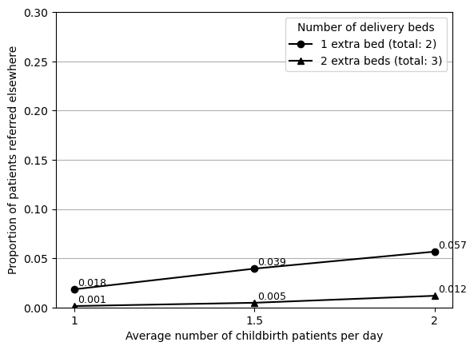
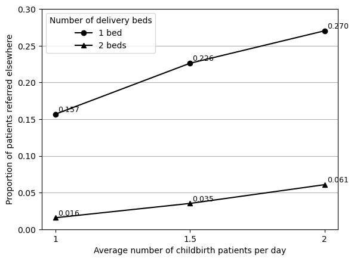
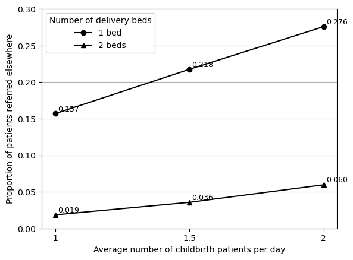
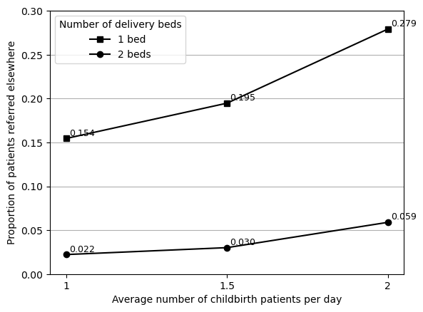
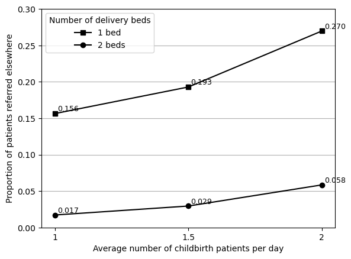

Reproduced Figure 4 and in-text results 1 and 2. Total time used: 21h 2m (52.6%)
Times below: Creating Figure 4
Times here (as lots to put in header):
9.31-9.49
10.04-10.50
11.01-11.48
11.56-12.02
12.50-12.56
13.08-13.38
From text, understand this analysis to be variants of configruation one where the number of beds is increased by 1 or 2, and where the number of childbirth arrivals is 1, 1.5 or 2 per day.
Working out IAT:
* 1 = IAT 1440 (as in e.g. config1)
* 1.5 = 960 (as 720+240=960, and 960+480=1440)
* 2 = IAT 720 (as we did for Figure 3)
As for others, just run 10 replications. The paper states they run 100, but that takes ages, and so I’ve taken the approach that - if it seems reasonably similar enough with 10 replications - I’m happy with it at this point. For posterity, can run all with 100 now or at the end if desired. As these just present mean results, I would only expect it to have a fairly minimal impact for mean of 10 v.s. 100 replications. For Table 6, I did run 100 replications as it was mean and SD.
However, this is not correct:

Realised this was my mistake and I had mis-interpreted it as adding 1 or 2 extra beds, but instead, it was simply having 1 or 2 beds in total. Upon re-reading the text again, this was definitely my mistake and not the article. Upon amending this, the figure looks much closer.

I was reasonably confident in this being correct, but anticipate the differences here would likely be resolved by doing 100 replications rather than 10. As such, tried running more replications (25 still instead of 100 due to time). Notebook run time 7m 16s.
This brought the result closer, although still some small differences.

As the figure is labelled, I can compare the numbers:
import pandas as pd# Input results from original and reproduced figurescomp = pd.DataFrame({'original': [0.021, 0.039, 0.0599, 0.150, 0.195, 0.270],'reproduced': [0.019, 0.036, 0.060, 0.157, 0.218, 0.276]})# Find size of difference and % changecomp['diff'] = comp['reproduced'] - comp['original']comp['pct_change'] = comp.pct_change(axis=1).iloc[:, 1]*100comp
original
reproduced
diff
pct_change
0
0.0210
0.019
-0.0020
-9.523810
1
0.0390
0.036
-0.0030
-7.692308
2
0.0599
0.060
0.0001
0.166945
3
0.1500
0.157
0.0070
4.666667
4
0.1950
0.218
0.0230
11.794872
5
0.2700
0.276
0.0060
2.222222
They’re very similar, and the only difference I’m uncertain about is 1 bed with 1.5 arrivals, as the actual size of the difference is 0.023 (19.5% referred elsewhere v.s. 21.8% referred elsewhere).
However, I think it is honestly pretty similar, and given that all the other points are very close. I tried running with 10 replications again to see if it looked particularly different, but came out as 0.221.
Since everything else looks right, I guessed it could potentially be related to the IAT used for 1.5 births. Although I’m pretty confident in my estimated value, I decided to try running it with a different IAT - just using a value equidistant between 720 and 1440. When I did this, we got a much closer result for the 1 bed, but a more different result for the 2 bed, for 1.5 births.

I again decided to try upping this to 25 replications to see if that has an impact.

Due to the differing results observed, I decided to run both IATs for 100 replications and use the results from that that best matched the original paper. However, this was heating up the computer and VS Code crashed at 80 replications (before any results are saved). I then tried 25 replications, but this experienced an error and seemed to get stuck running one of the models after that -
Traceback (most recent call last):
File "/home/amy/mambaforge/envs/shoaib2022/lib/python3.9/site-packages/salabim/salabim.py", line 4784, in step
next(c._process)
File "/home/amy/Documents/stars/stars-reproduce-shoaib-2022/reproduction/PHC.py", line 290, in process
yield self.hold(sim.Normal(5,1).bounded_sample())
File "/home/amy/mambaforge/envs/shoaib2022/lib/python3.9/site-packages/salabim/salabim.py", line 12058, in hold
self._reschedule(scheduled_time, priority, urgent, "hold")
File "/home/amy/mambaforge/envs/shoaib2022/lib/python3.9/site-packages/salabim/salabim.py", line 11827, in _reschedule
raise ValueError("scheduled time ({:0.3f}) before now ({:0.3f})".format(scheduled_time, self.env._now))
ValueError: scheduled time (91194.770) before now (91195.054)
As that had taken 15 minutes and also alot of compute power, I decided to go with the simplest approach: to run again but with 10 replications, as I have done for prior figures (for consistency with prior figures, and as I know from experimenting between 10 and 25 replications, that often this only has a fairly small impact on the mean values observed).
I then chose the IAT which produced results closest to the original paper (based on the assumption that the original authors might have reasonably used either value, since it is not provided and since I do not know the method used to estimate these).
At 13.38, decided this was successfully reproduced.
Reflections
Found it a bit tricky to work out to go from number of arrivals to inter-arrival rate. Still not quite sure on how, beyond making estimates based on provided arrivals and IAT.
Models that take a long time to run are a bit trickier to work with as it limits what you can do while you wait
Have assumed here that potentially the result might be from two IAT (cannot guarnatee that to be the case, but is what enabled me to get more consistent results with original paper). Regardless of what is true in this case (as we cannot necessarily know), a learning here is that if you do directly change parameters in a script for scenarios, it potentially leaves more margin for error than if it is done programmatically.
import syssys.path.append('../')from timings import calculate_times# Minutes used prior to todayused_to_date =1012# Times from todaytimes = [ ('9.31', '9.49'), ('10.04', '10.50'), ('11.01', '11.48'), ('11.56', '12.02'), ('12.50', '12.56'), ('13.08', '13.38')]calculate_times(used_to_date, times)
Time spent today: 153m, or 2h 33m
Total used to date: 1165m, or 19h 25m
Time remaining: 1235m, or 20h 35m
Used 48.5% of 40 hours max
13.42-14.13: In-text result 1
Used output from creating Figure 3, but focussed on waiting times for lab and OPD. Saved results as tables as actual change in minutes is only small, but plotting the figures makes it appear larger than it is.
Satisifed that these represent “marginal increases” in these outcomes, and consider successfully reproduced at 14.13.
# Minutes used prior to this reslutused_to_date =1165# Times from todaytimes = [ ('13.42', '14.13')]calculate_times(used_to_date, times)
Time spent today: 31m, or 0h 31m
Total used to date: 1196m, or 19h 56m
Time remaining: 1204m, or 20h 4m
Used 49.8% of 40 hours max
15.05-15.22: Simplifying reproduction code
Encountering increasing repetition between reproduction notebooks, so decided to create reproduction_helpers.py with process_results() function as it is used frequently between notebooks.
15.39-16.23, 16.28-16.33: In-text result 2
This result starts with the doctor utilisation from Figure 2A which is over 100% when patient load is 170 (IAT 3) and appointment times are 5 minutes (mean 5, SD 1, boundary 2). The variant introduced is to give all administrative work to the staff nurse. This is not something that can currently be modified in main().
The class Main() mentions this, "For sensitivity analysis. Admin work added to staff nurse rather than doctor", but it is not clear what to modify in that section to change assignment of admin work.
I worked through how admin work is generated and used throughout the script…
How admin work is generated and used
The script explains that the arrival of admin work is generated within Main(). It is generated by:
k = int(sim.Normal(100,20).bounded_sample(60,140))
If it is not warmup, then k is used as follows:
Patient.doc_service_time.append(k)
Main.NCD_admin_work.append(k)
ncd_time += k
Doc_service_time
The doc_service_time is composed of several times in a list (Patient.doc_service_time.append(doc_time), Patient.doc_service_time.append(total)) that are sum to find doc_tot_time (total time during 365 days) (doc_tot_time = sum(Patient.doc_service_time)).
NCD_admin_work
NCD_admin_work is add to sumi (for i in Main.NCD_admin_work: sumi += i) then cleared (Main.NCD_admin_work = []). sumi is:
Add to total_admin_work which is add to NCD nurse time and used to calculate Total_NCD_time.
That is add to NCD_occ_list, which is used in both results spreadsheets to find NCD nurse utilisation.
Used to calculate doctor admin time in the large results spreadsheet (whilst doctor admin time is not included in the replication results spreadsheet).
Used to calculate NCD nurse OPD time for the large results spreadsheet
ncd_time
ncd_time is composed of k (sampled admin work) and x (related to patient OPD visits). It is appended to ncd_util (ncd_util.append(ncd_time/(420*365))). ncd_util is the second NCD occ in the replication results spreadsheet. This row contains duplicate results with another NCD occ, and that row is based on NCD_occ_list (as mentioned above).
After this, I understood that admin work was currently given to both the doctor and the NCD nurse - and therefore, the change would be to add it to the staff nurse instead of the doctor in that else statement (which is as mentioned in that comment in the script, but wasn’t clear to me upon first looking).
The doctor admin time is add via Patient.doc_service_time.append(k).
Looking at the replication results spreadsheet, staff nurse occ is nurse_occ_list.
That list is created from nurse_occ_list.append((sum(Main.NT_list)+180*days)/(21*60*days)).
The NT_list is the nurse time list. It is created from Main.NT_list.append(temp) (which occurs several times in the script). In each case, temp refers to a sampled time (e.g. temp = sim.Uniform(120, 240, 'minutes').sample(), temp = sim.Triangular(8, 20.6, 12.3).sample()).
As such, I think that we should be able to add the admin work to the nurse time by appending k to NT_list. I amended PHC.py to enable input of a boolean to main() that adjusts who receives that time in Main().
I observed a decrease in utilisation of 12% (114% utilisation to 102%).
Reflections
Making it clear and easy to modify the model - as least, for the variants presented in the paper. In this case, challenging to identify how to re-allocate admin tasks.
Timings
# Minutes used prior to todayused_to_date =1012# Times from todaytimes = [ ('9.31', '9.49'), ('10.04', '10.50'), ('11.01', '11.48'), ('11.56', '12.02'), ('12.50', '12.56'), ('13.08', '13.38'), ('13.42', '14.13'), ('15.05', '15.22'), ('15.39', '16.23'), ('16.28', '16.33')]calculate_times(used_to_date, times)
Time spent today: 250m, or 4h 10m
Total used to date: 1262m, or 21h 2m
Time remaining: 1138m, or 18h 58m
Used 52.6% of 40 hours max